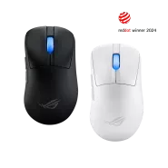
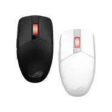
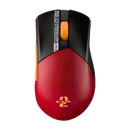

he ROG Keris II Ace is an ultralight 54-gram ergonomic gaming mouse with a shape tested by pro FPS players. Equipped with 42,000-dpi ROG AimPoint Pro optical sensor, ROG Optical Micro Switches and the ROG SpeedNova wireless technology, the Keris II Ace is also able to enhance gaming performance even further with the ROG Polling Rate Booster, which supports polling rates up to 4,000 Hz in wireless mode and up to 8,000 Hz in wired mode.

The ROG Strix Impact III Wireless is an ultralight 57-gram compact gaming mouse that features ROG SpeedNova wireless and Bluetooth® modes with long-lasting battery life. The ROG AimPoint optical sensor offers precise tracking, and the ROG Omni Receiver allows for connections to a keyboard and mouse via a single dongle.

The ROG Gladius III Wireless AimPoint EVA-02 Edition is a 79-gram wireless gaming mouse that features the 36K-dpi ROG AimPoint optical sensor, tri-mode connectivity, ROG SpeedNova wireless technology, swappable mouse switches, ROG Micro Switches, ROG Paracord, 100% PTFE mouse feet, and mouse grip tape.